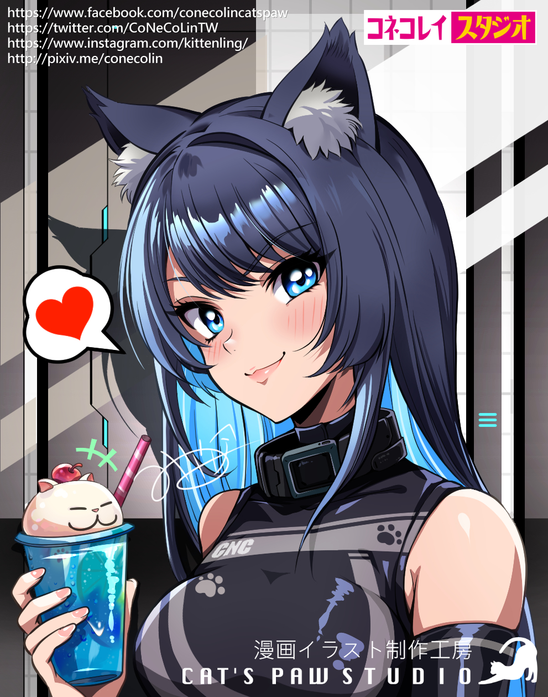
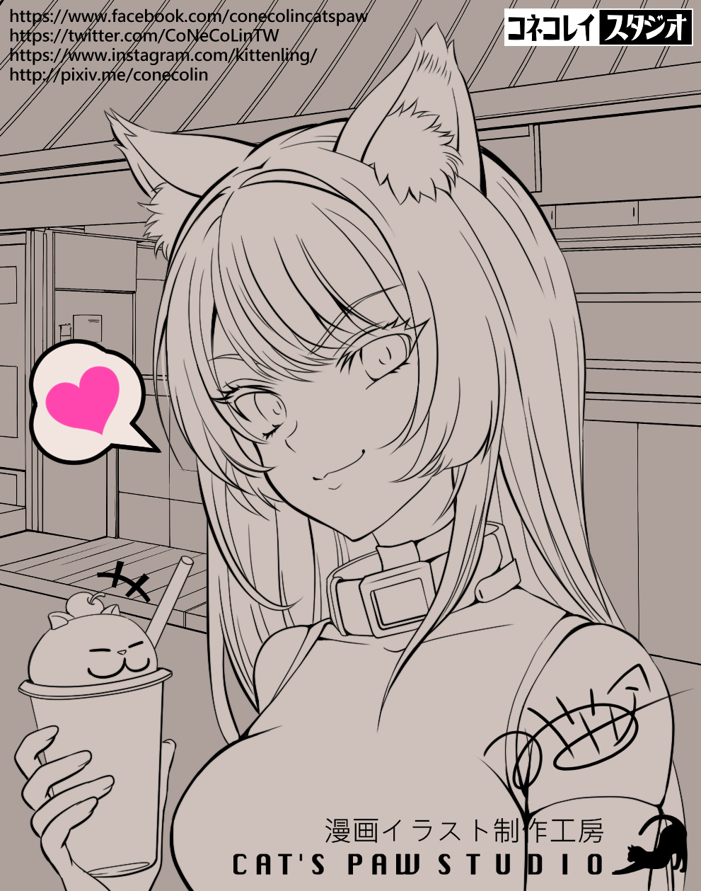
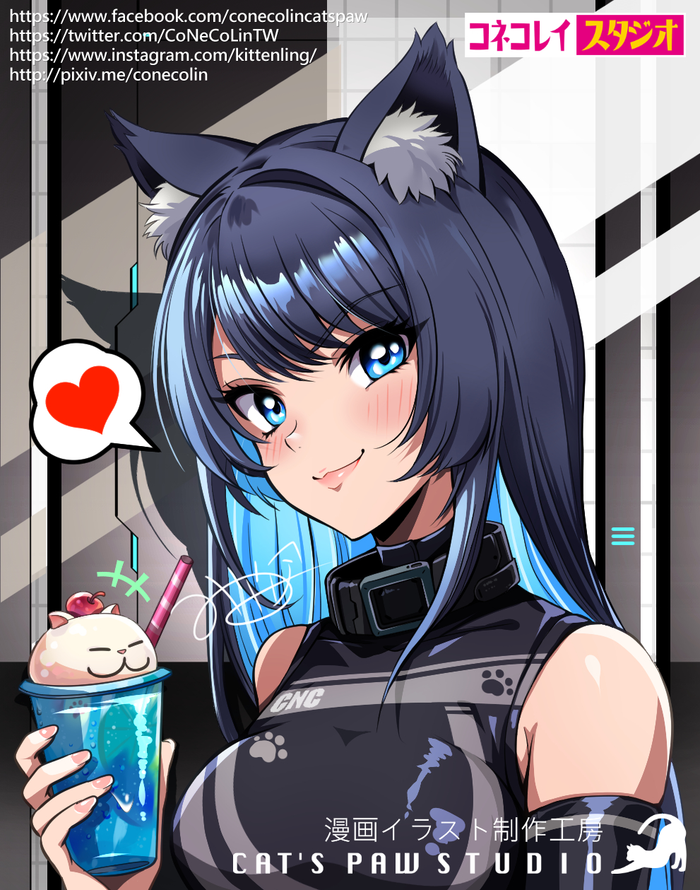
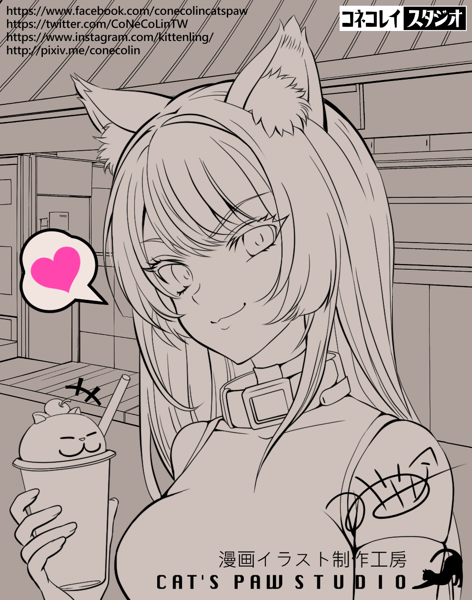

這次試著使用一下80年代風格，最近同類型的圖看多了有點疲乏，回頭看看懷舊風格感覺還真不錯，不過看來我還是掌握不好，畫過頭了。
CNC20230404-Catgirl-CNC_08_y2_concept
CNC拿著蘇打飲料，正準備享受她做美食外送員的休息時間。然在這個未來世界裡，外表可能是美食外送員，但實際上卻是一名危險的賞金獵人。
I tried using an 80s style this time, as I've been getting a bit tired of the recent similar-looking graphics. Looking back at the nostalgic style, it actually feels pretty good, but it seems I still can't quite master it, as I ended up overdoing it in my drawing.
CNC20230404-Catgirl-CNC_08_y2_concept
CNC was holding a soda drink, ready to enjoy her break as a food delivery driver. However, in this futuristic world, despite her appearance as a food delivery driver, she is actually a dangerous bounty hunter.
子貓玲/CoNeCoLin | Original Date: 2023-04-04 12:49:43
 


